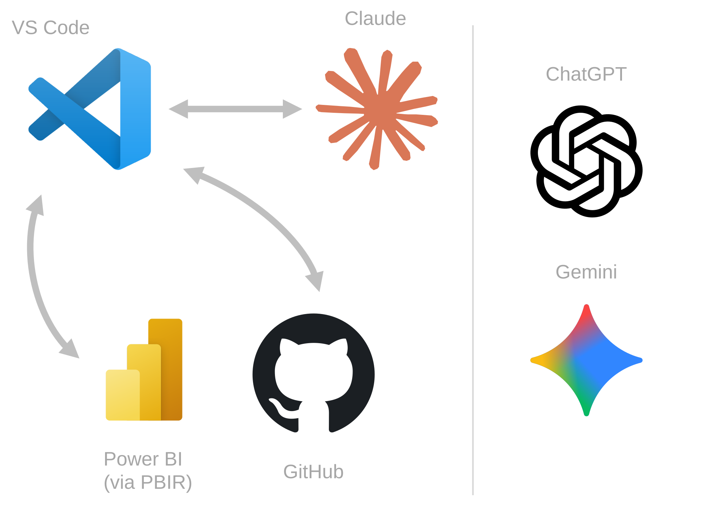
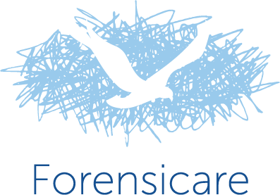

More About Me
I'm a data strategy specialist with deep expertise in enterprise-grade data modelling using Power BI and Microsoft Fabric. I design scalable semantic models and architectures that reduce complexity and strengthen decision-making across diverse industries. I maintain long-term client partnerships through co-design and human-centred approaches that keep solutions relevant, usable, and trusted.
My Method & Workflow

Ideate
Explore possibilities and generate innovative solutions through AI-assisted brainstorming with Claude Code in VS Code.
Create
Build and implement solutions with rapid prototyping, leveraging AI to accelerate development and maintain quality.
Orchestrate
Coordinate version control and manage the continuous development loop with Git to ensure traceability and collaboration.
Calibrate
Validate approaches using ChatGPT and Gemini for independent perspectives and strategic refinement before committing.
My AI Philosophy
I believe in embracing AI as a powerful tool that must be guided with care, ethics, and business maturity. At this stage of the technology (January 2026), AI amplifies human capability rather than replacing it. The person directing the AI needs deep domain knowledge to validate outputs, catch errors, and ensure solutions serve real needs. I've seen firsthand how thoughtful AI adoption can achieve 10x productivity gains, but only when humans remain accountable for quality, security, and ethical outcomes. I mentor colleagues on this balanced approach: use AI to accelerate work, but never abdicate judgement or responsibility. This perspective will likely evolve as the technology matures, which is why I stay actively engaged with developments in the field.
Professional Experience
Senior Consultant – Data & Analytics
Reporting & Analytics Lead
I rapidly progressed through three roles culminating in leading a team of 3 Power BI developers, driven by consistent value demonstrated to the CEO, exceptional client feedback, and trust earned across the organisation. I managed 30+ clients with 100% retention among key accounts, delivered 70+ reports with above-average adoption driven by genuine usefulness and UX-first design, and applied my skills across 9 sectors including banking, healthcare, retail, mining, and construction.
Role Progression:
- Reporting & Analytics Lead (April 2024 - August 2024)
- Senior Power BI Consultant (February 2023 - April 2024)
- Power BI Consultant (January 2022 - February 2023)
Notable Client Engagements:
-
RECOMMENDATIONChary Chigurala
Value Based Leadership, Harvard Business School | July 2024
Steve has developed Power BI reports for Bild Group, demonstrating sound knowledge of the tool and maintaining a professional relationship with clients. He is pleasant to work with and scores high in integrity and problem resolution.
Major Victorian Construction GroupI designed and implemented a safety incident tracking system that addressed workplace hazards and contributed to reduced incident rates. I then delivered a financial projection tool providing job costing visibility across Victorian operations.
-
RECOMMENDATIONEllen Badock
Human Resources Professional | August 2024
Steve created an amazing HR Metrics BI report for us which has helped HR and leaders in being able to easily access and analyse key current workforce and diversity statistics. Steve was so patient and helpful throughout the process.
Global Mining CorporationI established the first Australian division Power BI solution, creating the reporting foundation for the organisation. I then trained China headquarters on Power BI best practices and data modelling, enabling international knowledge transfer.
-
RECOMMENDATIONIsis Abbott
Transformational Leader Connecting People, Systems, and Strategy | November 2024
I have sought Steve's help on a number of projects, including some very challenging reports to convey complicated data stories. Steve does an amazing job of making the difficult simple for users, and providing insightful recommendations for telling meaningful data stories that help drive business decisions and actions. He is commercially astute, talented, flexible and easy to work with.
Leading Volume Home BuilderI unlocked sales insights through complex enterprise system integration, implemented process mining for construction workflows, and built tracking solutions for material and service cost impacts during inflationary periods.
-
RECOMMENDATIONNicole Mesiti
Strategic Projects & Product Manager | July 2024
Steve's ability to interpret data is second to none. His expertise in transforming raw data into meaningful insights was instrumental in the success of our project. He consistently provided valuable tips and went above and beyond in offering support.
Real Estate Technology CompanyI created a comprehensive CRM dashboard that transformed raw data into actionable insights, enabling the organisation to make data-driven decisions on customer engagement and sales performance.
Key Achievements:
- I built lasting client partnerships through empathetic, collaborative approaches
- I delivered Microsoft-approved trainings including "Dashboard in a Day" and "Fabric Analyst in a Day," plus advanced workshops on data modelling and visualisation
Power BI Developer
I joined a fast-track initiative to accelerate Power BI adoption across a major healthcare organisation, working within strict governance requirements typical of clinical environments. I delivered the prototype of a financial reporting solution in collaboration with accounting leadership, prioritising user experience and clarity through International Business Communication Standards (IBCS) to ensure effective decision support for executive stakeholders.

Data Analytics & Insights Manager
I established data analytics capability in a newly created role, reporting to the Executive Director and supporting strategic objectives for the $515M hospital expansion. I transformed an 800-employee forensic mental health organisation from static Word reports to an automated, interactive analytics platform.
Key Outcomes:
- Workplace Safety Governance: I delivered Occupational Health and Safety (OHS) analytics with dynamic row-level security (RLS), ensuring staff could only view incidents within their own ward while enabling cross-organisational pattern analysis. This contributed to a measurable reduction in staff injury rates and supported Work Health and Safety (WHS) compliance obligations.
- Compliance Monitoring: I built a Learning and Development (L&D) dashboard providing board-level visibility into training compliance across the clinical workforce. RECOMMENDATIONFelicity Donert
Organisational Development | December 2022
Steve really is a world-class powerhouse when it comes to Data Analytics. His unique ability to create 'data art', telling a story using visual representations provides organisations with a meaningful, directive which can shape business decisions. Having worked with other Analysts, Steve's intellect and mathematic genius is his unique selling point; bringing his mathematic background to the practice enables a much higher level of data integrity and understanding. Not only can Steve provide a visual representation in an easily understood and practical layout, but he also enables the user to continue his method with easily transferable data which can be updated using his templates which are custom designed to suit any organisation. As a humble colleague who puts others' needs ahead of his own, Steve is a guru in his field. Anyone working with him knows just how fortunate they are to have him on their side. I highly recommend Steve in any role he applies for, he's a true gentleman and gifted at what he does.
- Workforce Planning: I created position establishment reporting for the Executive Director, enabling vacancy rate calculations and identifying data integrity issues in HR systems. RECOMMENDATIONMaddy Gillbanks
HR Leader & Fashion Founder | May 2022
Steve was a highly effective and expert data wizard! Not only was he extremely dedicated and comprehensive with developing HR Data Analytics and Insights, but he was a delight to be around. A true team-player who I throughly enjoyed working with. He is an asset to any business.
- Pandemic Response: I designed a COVID-19 vaccination tracking platform (80%+ uptake) and workforce scenario models using Monte Carlo simulation for evidence-based continuity planning.
Pricing Manager
I progressed through three roles within TD Insurance, ultimately managing pricing strategy and R&D functions for an insurance portfolio generating $50M in annual premiums.
Role Progression:
- Pricing Manager (Aug 2017 - Mar 2018): I led pricing governance and rate-setting decisions, providing strategic guidance to senior leadership on risk-adjusted pricing during regulatory environment changes.
- Head of Research & Development (Jul 2015 - Aug 2016): I founded and led a Finance R&D team (2 direct reports), establishing data architecture for multi-million-row claims database integration. I designed reproducible analytical frameworks that reduced ad-hoc analysis turnaround from weeks to days.
- Senior Analyst (Jun 2011 - Jun 2015): I built the foundation of statistical modelling expertise including Generalised Linear Models (GLMs) and survival analysis for portfolio profitability assessment and regulatory capital requirements.
Creditor Insurance Consultant
I provided actuarial consulting services to banking and financial services clients on creditor insurance programs protecting loans and mortgages, delivering strategic recommendations on portfolio performance and regulatory reserve adequacy. I analysed claims experience and developed rate renewal recommendations for life and disability portfolios, balancing client profitability objectives with prudential risk requirements. I was recognised internally for advanced analytical tool development, building reusable Excel-based calculation frameworks adopted across consulting engagements to improve consistency and reduce delivery timelines.

Pro Bono Involvements
My passion for data and problem-solving not only brings me work to earn a living, but also empowers me to help people in my local community. I believe in using my skills to create meaningful impact beyond commercial projects, which is why I protect some of my time for volunteering projects that genuinely make a difference.
When our 100+ unit residential building faced ongoing theft incidents, police wouldn't act on isolated events - we needed data showing patterns, but residents were reporting through scattered channels making it impossible to demonstrate scale or trends.
I designed and implemented an end-to-end incident logging and evidence management solution using the Google ecosystem. I built a zero-cost solution using Google Forms for controlled data capture, Google Apps Script for orchestration, and Google Drive for secure structured storage. I implemented automated workflows that trigger confirmation emails, create incident-specific folders, and link evidence (photos, videos, documents) to originating records. I designed email reply handling as a low-friction ingestion channel, enabling non-technical residents to contribute evidence without requiring direct Drive access, and architected a data layer with consistent identifiers, immutable submissions, timestamped events, and metadata/evidence separation.
We now have a structured dataset proving theft patterns to submit to local authorities and be taken seriously, enabling longitudinal analysis and trend detection while maintaining minimal cognitive load for contributors and preserving governance, access control, and traceability for the building committee.
I delivered a comprehensive Power BI analytics solution for a local vegan retail shop, addressing inventory and sales optimization challenges while contributing to the animal welfare cause.
- I extracted sales data via REST API using Power Query recursive functions, demonstrating advanced data integration capabilities
- I implemented calculation groups using Tabular Editor external tool to enable flexible time-based analytics and comparative reporting
- I created interactive dashboards tracking sales trends, product performance, and inventory issues, providing actionable insights for retail operations
- I delivered a professional-grade solution valued at ~$10,000 as a volunteer contribution, combining a learning opportunity with meaningful community impact
Leadership / Research / Data Analysis / Innovation | January 2022
Steve volunteered his time to help our small plant-based business better manage our data and decision with a customer PowerBI interface that connects to our database. He is capable, honest, reliable, and I can wholeheartedly recommend him and his work.
I volunteered as a homework tutor supporting high school students with mathematics and science coursework, making learning more accessible and engaging for reluctant teenagers.
- I provided one-on-one and small group tutoring sessions helping students overcome academic challenges and build confidence in STEM subjects
- I adapted teaching approaches to individual learning styles, making complex concepts more approachable and reducing math anxiety
- I contributed to improved student outcomes and academic engagement through patient, encouraging mentorship
Click to see what these kids prepared, just before the move to Australia. (In French only)